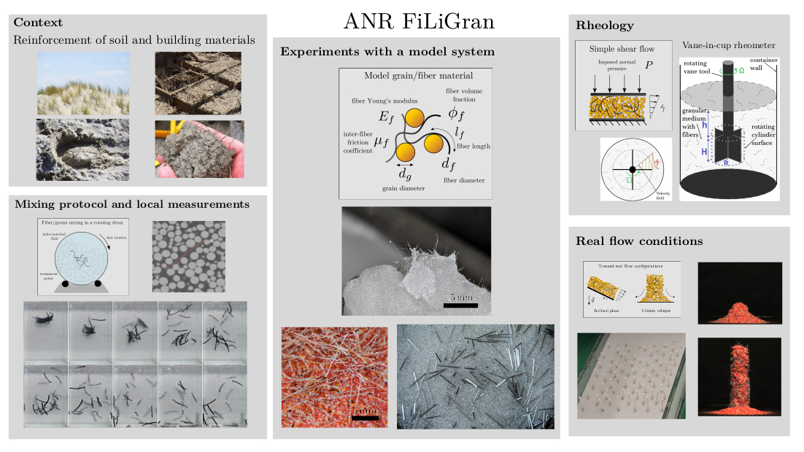

Mechanics of Fiber-interLinked Granular Materials

Project Title: Mechanics of Fiber-interLinked Granular Materials
This project proposes to rationalize the behavior of fiber-reinforced granular media. Adding a small amount of flexible fibers to non-cohesive grains strongly modifies their mechanical response. Indeed, entanglement between flexible fibers and rigid grains causes a strong coupling that increases the material yield stress much above the confining pressure, induces a substantial resistance to traction, and hinders extensional flows. Thus, the physics of granular materials added with fiber differs from the classical mechanics of granular media or fiber assemblies and requires the development of a new framework.
To achieve this goal, we will realize a set of experiments to characterize the behavior of a model fiber-reinforced granular material under different solicitations. In a first step, we will study its mechanical response in compression and traction in the quasi-static limit and determine how the presence of fibers affects the yield stress of this material. These experiments will be complemented by visualizations allowing us to track the deformation of fibers during the solicitation.
In a second phase, we will investigate the flowing behavior of a granular medium added with flexible fibers in a simple shear flow where the pressure is imposed. These results, associated with a dimensional analysis of the problem, will permit us to propose a rheological formulation for fiber-reinforced granular materials. Thereafter, we will test the validity of this rheological law to describe the flowing behavior of this material in more realistic configurations.
Finally, we will develop a theoretical modeling of the coupling between fibers and grains to complete our understanding of fiber-reinforced granular materials. This understanding will foster the development of fiber-reinforced techniques to realize sustainable infrastructures for civil engineering.